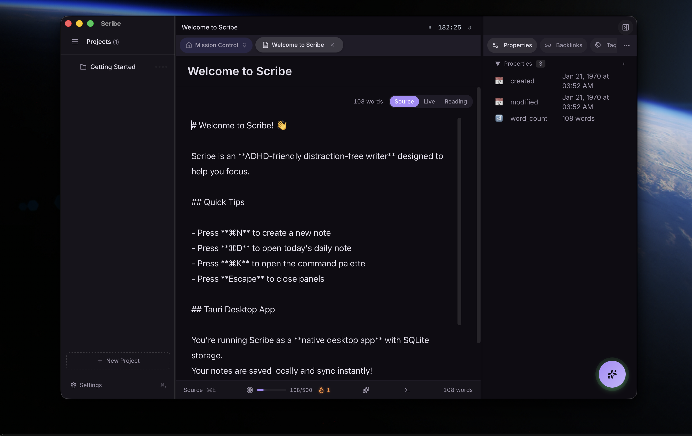
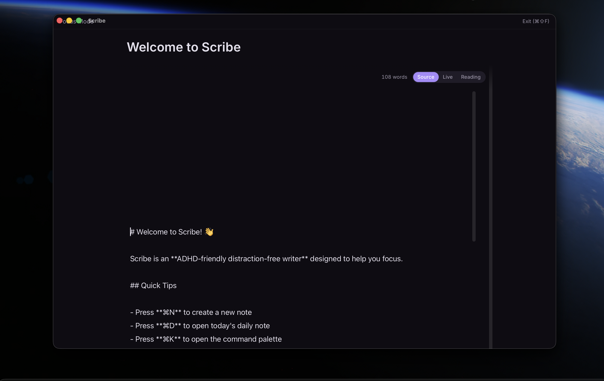

Scribe
ADHD-Friendly Distraction-Free Writer
The Problem
| Struggle | How It Hurts |
|---|---|
| Too Many Choices | Decision paralysis before you even start |
| Visual Clutter | Sidebars, tabs, notifications steal focus |
| Slow Startup | 10+ seconds = you've already context-switched |
| Lost Work | Forgot to save? Bye-bye, brilliant paragraph |
The Solution
| Scribe Does | You Get |
|---|---|
| Zero-config startup | Writing in < 3 seconds |
| Single note view | Deep focus, one thing at a time |
| Auto-save always | Never lose a word |
| ⌘W closes | Instant escape hatch when overwhelmed |
Quick Start
# Install via Homebrew
brew install --cask data-wise/tap/scribe
# Or build from source
git clone https://github.com/Data-Wise/scribe
cd scribe && npm install && npm run dev
Screenshots
Main Editor
 Mission Control sidebar, editor, and properties panel
Focus Mode
 Distraction-free writing with sidebars hidden
Key Features
-
Distraction-Free Editor
HybridEditor with write/preview mode, focus mode, and live wiki-link highlighting
-
ADHD-Friendly Themes
10 built-in themes (5 dark, 5 light) with auto-switching by time of day
-
Project System
Research, Teaching, R-Package, R-Dev, and Generic project types
-
CLI-Based AI
Claude + Gemini CLI integration (no API keys needed)
-
Embedded Terminal
Full PTY shell with smart project-aware working directory
Feature Overview
| Feature | Description |
|---|---|
| HybridEditor | Markdown write mode + rich preview |
| Focus Mode | Distraction-free, one note at a time |
| Themes | 10 ADHD-friendly themes + custom creator |
| Fonts | 14 recommended fonts + Homebrew install |
| Wiki Links | [[link]] to connect notes |
| Tags | #tag with colored badges and autocomplete |
| Daily Notes | Auto-created with templates |
| AI | Claude + Gemini CLI (no API keys) |
| Terminal | Embedded PTY with project-aware CWD |
| Export | LaTeX, PDF, Word, Quarto (planned) |
ADHD Design Principles
Zero Friction
< 3 seconds from launch to writing. No dialogs. No choices. Just write.
One Thing at a Time
Single note visible. Sidebar collapses in focus mode. No tabs.
Escape Hatches
⌘W closes (auto-saves). ⌘Z always works. No confirmation dialogs.
Visible Progress
Word count always visible. Session timer. Streak indicators.
Sensory-Friendly
Dark mode default. No distracting animations. Muted colors, high contrast text.
Keyboard Shortcuts
| Action | Shortcut |
|---|---|
| Global: Open Scribe | ⌘⇧N |
| Command Palette | ⌘K |
| New Note | ⌘N |
| Daily Note | ⌘D |
| Focus Mode | ⌘⇧F |
| Toggle Preview | ⌘E |
| Close | ⌘W |
Tech Stack
| Component | Technology |
|---|---|
| Framework | Tauri 2 + React 18 |
| Editor | HybridEditor (ReactMarkdown) |
| Styling | Tailwind CSS |
| State | Zustand |
| Database | SQLite (Tauri) / IndexedDB (Browser) |
| AI | Claude/Gemini CLI |
Documentation
User Guides
- Quick Start - Get running in 2 minutes
- Getting Started - Full user guide
- Installation - Detailed installation instructions
Feature Guides
- Editor Guide - HybridEditor usage
- Keyboard Shortcuts - All shortcuts reference
- Themes - Theme customization
- Features Overview - Complete feature list
Mission Control
- Mission Control Walkthrough - Sidebar tutorial
Technical Reference
- API Reference - Complete API documentation
- Architecture - System architecture overview
- Dual-Mode Architecture - Tauri/Browser runtime
- Components - React component reference
- Tests Summary - Test coverage details
Project
- Project Definition - Scope & roadmap
- Changelog - Version history
- Release Notes - Release information
Development
- Contributing - How to contribute
- Development Architecture - Dev setup
- Sprint History - Development sprints